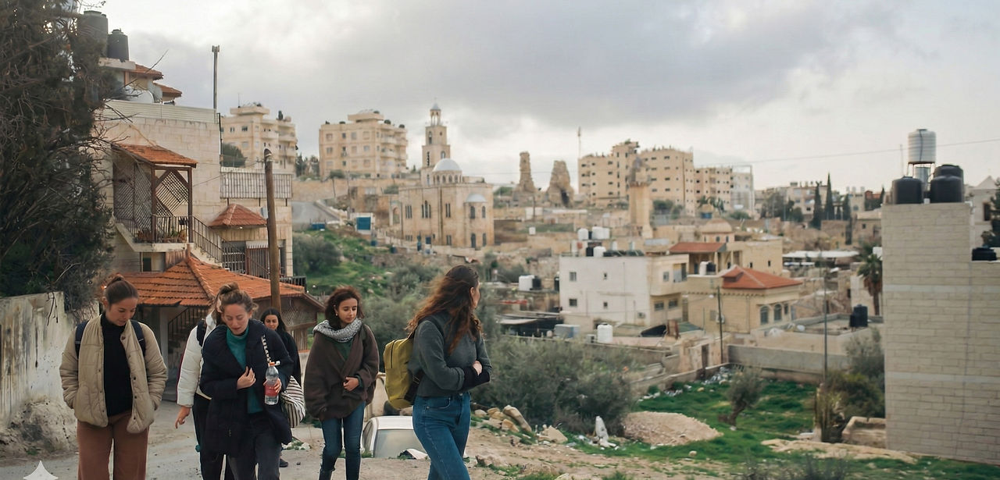
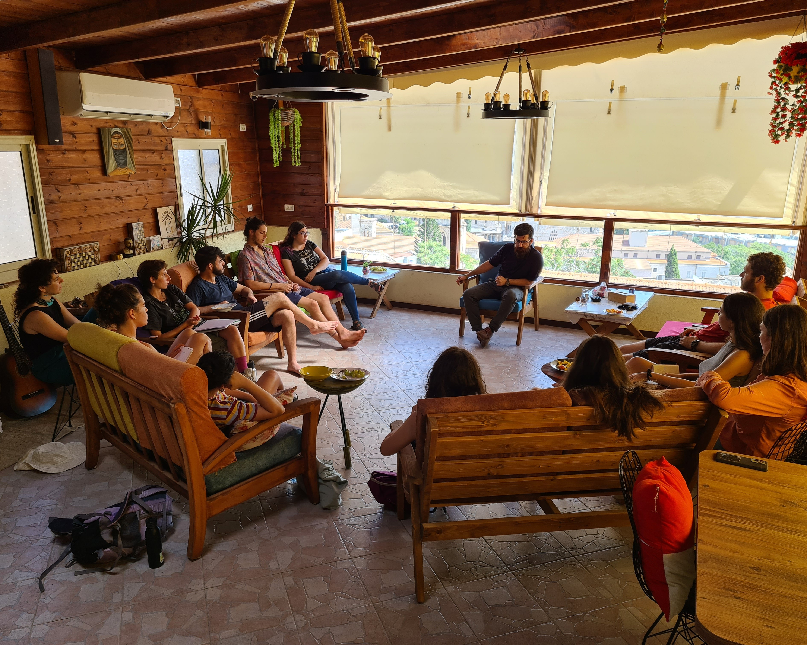

מדרשת דרור - הבית לסמינרים פוליטיים חברתיים
"וּקְרָאתֶם דְּרוֹר בָּאָרֶץ לְכָל יֹשְׁבֶיהָ"
לימוד שמשנה נקודת מבט
מדרשת דרור היא מרכז ללימוד, העמקה ועשייה חברתית-פוליטית בתחום הסכסוך הישראלי פלסטיני. התוכניות שאנו מייצרים מבוססים על ערכים הומניסטיים, בניית קהילה, לימוד מקצועי, נוכחות בשטח, ושיח בגובה העיניים.
בואו ללמוד אצלנו
מגוון סמינרים ביקורתיים ומעמיקים על הסכסוך הישראלי פלסטיני, המותאמים לקהלים שונים ולשלבים שונים של מעורבות.

סמינר סתיו
תכנית הדגל שלנו— סמינר הקיץ המקיף והמעמיק ביותר לחוויה משנה חיים.
לפרטים נוספים arrow_back

מכיבוש לפיוס
קורס אקדמי בן 13 מפגשים בתל אביב, המשלב תיאוריה ופרקטיקה פוליטית.
לפרטים נוספים arrow_backצרו איתנו סמינרים
המדרשה משמשת כצומת לחיבור בין אזרחים שרוצים להרחיב את הידע ולפעול, ובין פעילים וארגונים חברתיים, המבקשים ליצור פעילות חינוכית פוליטית, מעמיקה וביקורתית. אנו מעניקים את הכלים להוביל וללמוד איך עושים פעילות פוליטית משמעותית.
שותפות למען העתיד
מדרשת דרור היא פרויקט משותף של ארגון לוחמים לשלום וארגון שוברים שתיקה. הפעילות שלנו מבוססת כולה על תרומות של אזרחים המאמינים בכוחו של חינוך פוליטי.

שאלות ותשובות
מהי מדרשת דרור? expand_more
מי יכול להשתתף בסמינרים? expand_more
איפה מתקיימות הפעילויות? expand_more
בואו נדבר
מתעניינות.ים בתוכניות? יש שאלות? מלאו את הטופס ונחזור אליכן.ם בהקדם האפשרי.